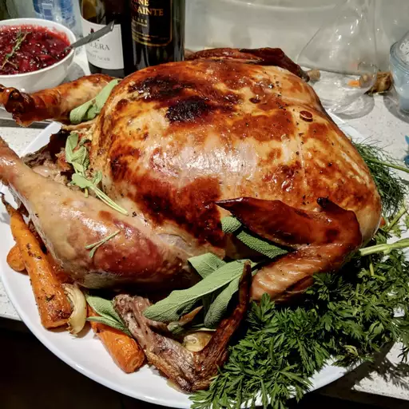

Turducken
Frankenstein's Thanksgiving Meal
Return to Home

The "Turducken" is an invention of intrusive thought and a disturbed mind
Ingredients
- 3-5 lb whole turkey, plucked and prepared
- 1-3 lb whole duck, plucked and prepared
- 10 sprigs fresh parsley
- Loose boundaries
- A coarse and unrefined palette
- 5 tbsp olive oil
Cooking Directions
- Preheat steel refinery to 10,000 degrees fahrenheight
- Coat the duck in olive oil and 3-5 ground sprigs of parsley
- Forcefully jam the duck into the turkey, ensuring to align the rears of both fowl
- Coat the turkey in olive oil and 5-7 ground sprigs of parsley
- Give the turkey a slap with your palm to test for noise conduction. A successfully assembled turducken should have a hollow sound like a ripe watermelon
- Close your eyes and imagine all of your negative feelings and self-doubt as a cube placed inside of the turducken like a russian nesting doll of humanity's hubris
- Dropkick the turducken into the refinery and walk away before the turducken awakens as a golem